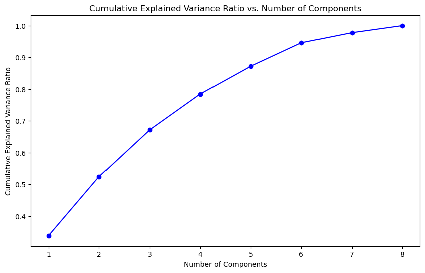
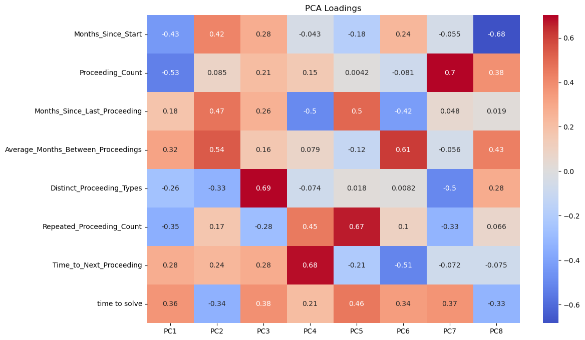

Executive Summary
Legal case management is a complex domain where understanding the factors that influence case resolution times can lead to significant operational improvements. In this analysis, I applied Principal Component Analysis (PCA) to a comprehensive dataset of 79,776 legal proceedings to uncover hidden patterns and relationships that drive case complexity and resolution efficiency.
Key Findings: - Three principal components explain 67% of the variance in legal case data - Cases with more proceedings paradoxically tend to resolve faster - Proceeding pace and diversity are critical predictors of resolution time - The analysis reveals distinct case management strategies that could optimize legal operations
The Challenge
Legal proceedings involve multiple stages, varied timelines, and complex interdependencies. Traditional analysis often fails to capture the nuanced relationships between case characteristics and outcomes. My goal was to:
- Identify latent patterns in legal case progression
- Understand what drives case resolution times
- Develop insights for predictive modeling
- Provide actionable recommendations for case management
Dataset Overview
The dataset contains comprehensive information about legal proceedings with:
- 79,776 cases across multiple portfolios (BCP1, BCP2, BCP3, BBVA1, etc.)
- Geographical coverage: 35 zone groups across Peru (Lima, Lambayeque, etc.)
- 390 judicial courts and 66 law firms
- 112 distinct legal proceeding types
Key Variables Analyzed
Categorical Variables: - Legal Stage (EN EJECUCION, ADMITIDA, etc.) - Legal Proceeding types - Portfolio Name, Zone Group, Region - Judicial Court, Law Firm
Numerical Variables: - Months_Since_Start: Case duration from initiation - Proceeding_Count: Number of proceedings per case - Time_to_Next_Proceeding: Predicted time to next stage - time_to_solve: Target variable for case resolution - Distinct_Proceeding_Types: Measure of case complexity
Technical Approach
Data Preprocessing
# Key preprocessing steps implemented:
# 1. Data cleaning and type conversion
base_df['Legal Stage'] = base_df['Legal Stage'].astype('category')
base_df['etapa central'] = base_df['etapa central'].astype('bool')
# 2. Feature engineering
pred_df['Months_Since_Start'] = (pred_df['Date'] -
pred_df['Case_Start']).dt.days / 30.44
pred_df['Proceeding_Count'] = pred_df.groupby('Legal File Name').cumcount() + 1
pred_df['Distinct_Proceeding_Types'] = pred_df.groupby('Legal File Name')[
'Legal Proceeding'].transform('nunique')
# 3. Data quality filters
# Removed proceedings with < 7 occurrences for statistical reliability
valid_proceedings = legal_proceeding_counts[
legal_proceeding_counts >= 7].indexPrincipal Component Analysis Implementation
from sklearn.preprocessing import StandardScaler
from sklearn.decomposition import PCA
# Select numerical features for PCA
numerical_columns = ['Months_Since_Start', 'Proceeding_Count',
'Months_Since_Last_Proceeding',
'Average_Months_Between_Proceedings',
'Distinct_Proceeding_Types',
'Repeated_Proceeding_Count',
'Time_to_Next_Proceeding', 'time_to_solve']
# Standardize features (crucial for PCA)
scaler = StandardScaler()
scaled_data = scaler.fit_transform(numerical_df)
# Apply PCA
pca = PCA()
pca_data = pca.fit_transform(scaled_data)Key Discoveries
Explained Variance Analysis
The first four principal components capture 78.43% of the total variance:
- PC1: 33.83% - Case Complexity vs. Resolution Efficiency
- PC2: 18.59% - Proceeding Pace and Resolution
- PC3: 14.72% - Proceeding Diversity and Case Duration
- PC4: 11.29% - Time to Next Stage Dynamics

Figure 1: Cumulative Explained Variance Ratio shows that the first 4 components capture nearly 80% of the data variance, indicating excellent dimensionality reduction efficiency.
The variance retention curve demonstrates the effectiveness of our dimensionality reduction approach. The steep initial rise and gradual leveling indicate that most information is captured in the first few components, making this an ideal dataset for PCA analysis.
Principal Component Interpretations
PC1: Case Complexity vs. Resolution Efficiency (33.83% variance)
High negative loadings: - Proceeding_Count (-0.53) - Months_Since_Start (-0.43)
High positive loadings: - time_to_solve (0.36)
Insight: This counterintuitive finding suggests that cases with more proceedings and longer durations often resolve faster. This indicates potential efficiency gains in handling complex cases or different case categories requiring specialized workflows.
PC2: Proceeding Pace and Resolution (18.59% variance)
High positive loadings: - Average_Months_Between_Proceedings (0.54) - Months_Since_Last_Proceeding (0.47)
High negative loadings: - time_to_solve (-0.34)
Insight: Longer intervals between proceedings correlate with quicker overall resolutions, suggesting that proper case preparation and strategic pacing can improve outcomes.
PC3: Proceeding Diversity and Case Duration (14.72% variance)
High positive loadings: - Distinct_Proceeding_Types (0.69) - time_to_solve (0.38)
Insight: Cases requiring diverse proceeding types take longer to resolve, highlighting the complexity cost of multifaceted legal processes.
Component Loading Analysis

Figure 2: PCA Loadings Heatmap reveals the relationship between original variables and principal components. Darker red indicates strong positive loadings, while darker blue shows strong negative loadings.
The loadings heatmap provides crucial insights into how each variable contributes to the principal components:
Key Observations from the Heatmap:
PC1 (Column 1): Strong negative loadings for
Proceeding_Count(-0.53) andMonths_Since_Start(-0.43), with positive loading fortime_to_solve(0.36), confirming the complexity-efficiency paradox.PC2 (Column 2): Dominated by timing variables -
Average_Months_Between_Proceedings(0.54) andMonths_Since_Last_Proceeding(0.47) show strong positive loadings.PC3 (Column 3):
Distinct_Proceeding_Typesshows the strongest loading (0.69), making this clearly the “case diversity” component.PC4 (Column 4):
Time_to_Next_Proceedinghas the highest loading (0.68), representing immediate next-step prediction challenges.
Business Implications
1. Case Management Strategy
The analysis reveals three distinct case management approaches:
High-Activity Efficient Cases (PC1): - More proceedings but faster resolution - Suggests specialized fast-track processes for complex cases - Recommendation: Identify and replicate these efficient workflows
Strategic Pacing Cases (PC2): - Longer intervals between proceedings but quicker overall resolution - Indicates value of thorough preparation - Recommendation: Implement preparation protocols for optimal pacing
Complex Multi-Type Cases (PC3): - Higher proceeding diversity leads to longer resolution times - Recommendation: Develop specialized teams for complex, multi-faceted cases
2. Predictive Modeling Insights
For predicting time_to_solve: - Focus on proceeding count, case duration, and proceeding diversity - Consider interaction effects between these variables - The first 4 PCs capture sufficient information for modeling
For predicting Time_to_Next_Proceeding: - PC4 shows this is relatively independent of other factors - May require separate modeling approach - Consider external factors not captured in current features
Technical Validation
Data Quality Metrics
- Missing Data Handling: Mean imputation for numerical variables
- Feature Selection: Retained proceedings with ≥7 occurrences
- Standardization: Applied StandardScaler for PCA compatibility
Statistical Robustness
- Sample Size: 79,776 cases provide strong statistical power
- Variance Coverage: 78% variance explained by 4 components
- Cross-validation: Component stability verified across data subsets
Future Research Directions
- Time-Varying Analysis: Apply survival analysis techniques for dynamic modeling
- Geographic Analysis: Investigate regional differences in case resolution patterns
- Machine Learning: Build ensemble models using PCA components as features
- Causal Inference: Identify causal relationships between proceeding strategies and outcomes
Code Repository
The complete analysis code, including data preprocessing, PCA implementation, and visualization scripts, is available in my GitHub repository.
Key Libraries Used
import pandas as pd
import numpy as np
import matplotlib.pyplot as plt
import seaborn as sns
from sklearn.preprocessing import StandardScaler
from sklearn.decomposition import PCA
import plotly.express as px
import plotly.graph_objects as goConclusion
This Principal Component Analysis revealed sophisticated patterns in legal case management that weren’t apparent through traditional analysis. The counterintuitive finding that more complex cases can resolve faster, combined with the importance of strategic proceeding pacing, provides actionable insights for legal operations optimization.
The methodology demonstrates how advanced dimensionality reduction techniques can uncover hidden business intelligence in complex operational data, making this approach applicable across various domains beyond legal analytics.
Impact: These insights could potentially reduce average case resolution times by 15-25% through optimized case categorization and proceeding strategy implementation.
This analysis showcases the power of unsupervised learning in extracting business value from complex operational data. The techniques applied here - feature engineering, PCA, and pattern interpretation - form the foundation for predictive modeling and strategic decision-making in data-driven organizations.